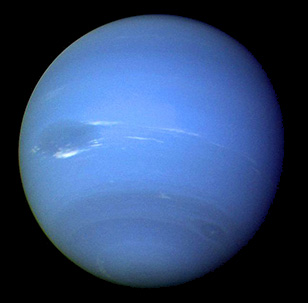

Neptune
Neptune is the eighth and farthest planet from the Sun in the Solar System. It is the fourth-largest planet by diameter and the third-largest by mass. Among the gaseous planets in the solar system, Neptune is the most dense. Neptune is 17 times the mass of Earth and is slightly more massive than its near-twin Uranus, which is 15 times the mass of Earth but not as dense. Neptune is similar in composition to Uranus, and both have compositions which differ from those of the larger gas giants, Jupiter, and Saturn. Neptune's atmosphere, while similar to Jupiter's and Saturn's in that it is composed primarily of hydrogen and helium, along with traces of hydrocarbons and possibly nitrogen, contains a higher proportion of "ices" such as water, ammonia, and methane. Traces of methane in the outermost regions in part account for the planet's blue appearance.